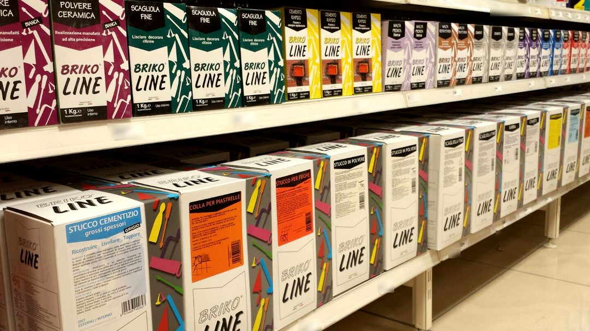
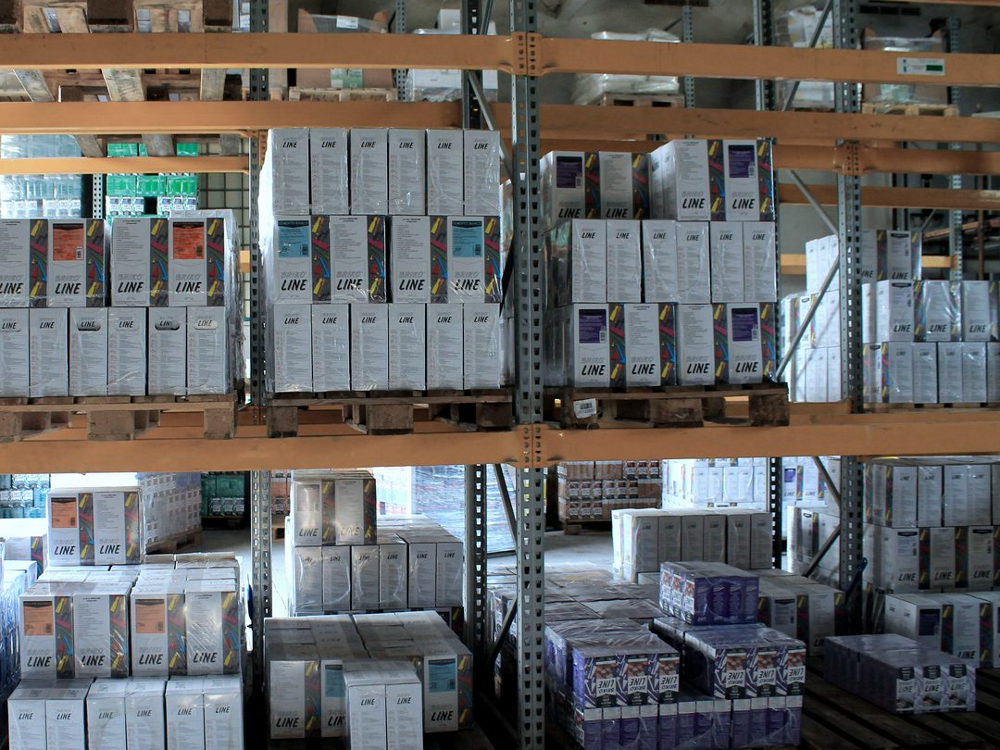
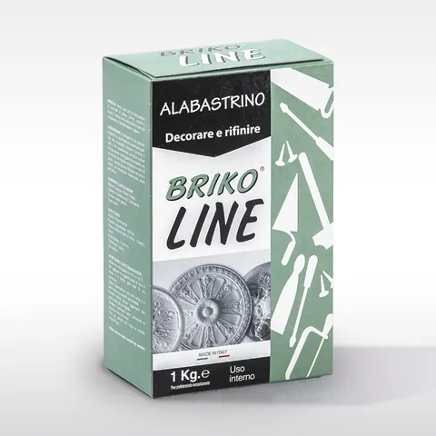
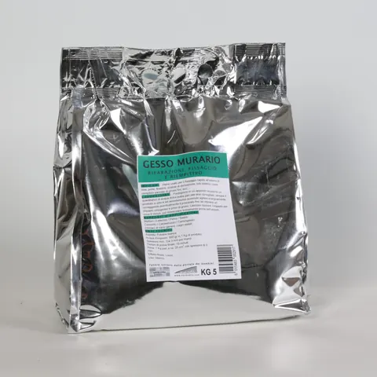
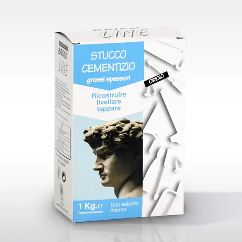
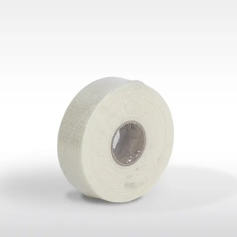

Produttori dal 1985, Tombelle di Saonara (PD)
Stucchi, gessi e malte
In polvere e in pasta. Li produciamo a Tombelle di Saonara e li vendiamo ai negozi in tutta Italia.
Oppure scegli il lavoro
Dove lo compro? Nei negozi, in tutta Italia
Sei del mestiere? Sacchi Artelinea e schede tecniche

Ordini dei negozi
Dal lunedì al venerdì, 8-12 e 14-18
Dal lunedì al venerdì 8-12 e 14-18 · info@narditalia.com
Per i negozi
Hai un negozio? Ordina per codice
Vendiamo ai negozi in tutta Italia: ferramenta, colorifici, agrarie, brico, empori e rivendite edili. Le scatole Briko Line da 1 kg si ordinano in confezioni da 12 pezzi e a bancali.
- Trova il codice nella ricerca o nell'elenco dei codici e delle confezioni, da stampare.
- Chiama o scrivi al 049 879 0626 dal lunedì al venerdì, 8-12 e 14-18, o a info@narditalia.com con codici e quantità.
- Schede di sicurezza nella ricerca, prodotto per prodotto. Per le domande: sicurezza@narditalia.com.

- 1985nasce la ditta Nardi
- 96prodotti in catalogo
- 4linee: Briko Line, Artelinea, Gli speciali, Altri prodotti
- 12pezzi per confezione nelle scatole da 1 kg
- 89prodotti con la scheda tecnica in PDF
- 2011l'impianto fotovoltaico per la produzione
Prodotti
Quattro linee, 96 prodotti
Per il privato e per il professionista: la scatola da 1 kg per la crepa di casa, il sacco da 25 kg per il cantiere.

Briko Line
43 prodotti per il fai da te: scatole da 1 kg, secchielli da 750 g, confezioni da 5 kg.
Codici e schede
Artelinea
41 prodotti per il professionista: confezioni da 5, 10 e 25 kg e secchi.
Codici e schede
Gli speciali
6 prodotti: stucchi e rasanti per grossi spessori, intonaco di finitura, malta risanante.
Codici e schede
Altri prodotti
6 prodotti: mastice per vetri, rete autoadesiva, isolante al solvente, segatura, secchielli.
Codici e schede
Codici, confezioni e schede di tutti i prodotti
Codici e confezioni come sulle schede. Il listino prezzi è su richiesta.
Apri l'elenco dei 96 prodottiChiudi l'elenco
| Prodotto | Codice e confezione | Schede (PDF) |
|---|---|---|
| Briko Line 43 prodotti | ||
| Additivo per malte | 4230010 Da cc 1000x16 pz (bancali da 512 pz) | Tecnica Sicurezza |
| Brikoll per parquettes | 4437507 Da gr 750x12 pz | Tecnica Sicurezza |
| Brikoll per piastrelle | 4433507 Da gr 750x12 pz | Tecnica Sicurezza |
| Brikoll per polistirolo | 4434507 Da gr 750x12 pz | Tecnica Sicurezza |
| Calce idrata | 4310030 Da kg 3x5 pz (bancali da kg 450) | Tecnica Sicurezza |
| Calce idraulica | 4349050 Da kg 5x4 pz (bancali da kg 720) | Tecnica Sicurezza |
| Cemento bianco | 4304050 Da kg 5x4 pz (bancali da kg 720) 4304010 Da kg 1x12 pz. (bancali da kg 720) | Tecnica Sicurezza |
| Cemento grigio | 4305050 da kg 5x4 pz (bancali da kg 720) 4305010 da kg 1x12 pz. (bancali da kg 720) | Tecnica Sicurezza |
| Cemento rapido | 4307050 Da kg 5x4 pz (bancali da kg 720) 4307010 Da kg 1x12 pz. (bancali da kg 720) | Tecnica Sicurezza |
| Colla per piastrelle bianca | 2308250 da kg 25 2308100 da kg 10 2308050 da kg 5 | Tecnica Sicurezza |
| Colla per piastrelle grigia | 2386250 da kg 25 2386100 da kg 10 2386050 da kg 5 | Tecnica Sicurezza |
| Colla universale | 4427507 Da gr 750x12 pz (bancali da 768 pezzi) | Tecnica Sicurezza |
| Gesso alabastrino | 4362050 da kg 5x4 pz (bancali da kg 720) 4362010 da kg 1x12 pz. (bancali da kg 720) | Tecnica Sicurezza |
| Gesso bologna | 4342006 Da gr 600x6 pz | Tecnica Sicurezza |
| Gesso murario | 4302050 Da kg 5x4 pz (bancali da kg 720) 4302010 Da kg 1x12 pz. (bancali da kg 720) | Tecnica Sicurezza |
| Gesso scagliola | 4301050 da kg 5x4 pz (bancali da kg 720) 4301010 da kg 1x12 pz. (bancali da kg 720) | Tecnica Sicurezza |
| Gomma impermeabilizzante | 4426507 Da gr 750x12 pz (bancali da 768 pezzi) 2420240 Da kg 24 (bancali da 30 pezzi) 2420080 Da kg 8 (bancali da 80 pezzi) | Tecnica Sicurezza |
| Intonaco adesivo bianco | 4466507 Da gr 750x12 pz (bancali da 768 pezzi) | Tecnica Sicurezza |
| Intonaco adesivo grigio | 4419507 Da gr 750x12 pz (bancali da 768 pezzi) | Tecnica Sicurezza |
| Isolante Antimuffa | 4296010 Da cc 1000x12 pz (bancali da 504 pz) | Tecnica Sicurezza |
| Isolante fissativo all'acqua | 4220010 Da cc 1000x12 pz (bancali da 504 pz) | Tecnica Sicurezza |
| Malta bianca | 4348050 Da kg 5x4 pz (bancali da kg 720) 4348010 Da kg 1x12 pz. (bancali da kg 720) | Tecnica Sicurezza |
| Malta grigia | 4306050 Da kg 5x4 pz (bancali da kg 720) 4306010 Da kg 1x12 pz. (bancali da kg 720) | Tecnica Sicurezza |
| Malta refrattaria | 4308050 Da kg 5x4 pz (bancali da kg 720) 4308010 Da kg 1x12 pz. (bancali da kg 720) | Tecnica Sicurezza |
| Malta refrattaria in pasta | 4418010 Da gr 1000x12 pz (bancali da 768 pezzi) | Tecnica Sicurezza |
| Mordente mogano | 4345005 | Tecnica Sicurezza |
| Mordente noce | 4344005 | Tecnica Sicurezza |
| Ossido di ferro blu | 4339005 | Tecnica Sicurezza |
| Ossido di ferro bruno | 4324005 | Tecnica Sicurezza |
| Ossido di ferro giallo | 4322005 | Tecnica Sicurezza |
| Ossido di ferro nero | 4325005 | Tecnica Sicurezza |
| Ossido di ferro rosso | 4323005 | Tecnica Sicurezza |
| Ossido di ferro verde | 4338005 | Tecnica Sicurezza |
| Polvere ceramica bianca | 4312050 4312010 Da kg 5x4 pz (bancali da kg 720) | Tecnica Sicurezza |
| Polvere ceramica terracotta | 4313050 4313010 Da kg 5x4 pz (bancali da kg 720) | Tecnica Sicurezza |
| Sabbia | 4311050 Da kg 5x4 pz (bancali da kg 720) | Tecnica Sicurezza |
| Schiuma poliuretanica | 4554502 Da ml 250 | Tecnica Sicurezza |
| Stucco in pasta bianco | 4428050 Da kg 5 singole (bancali da kg 750) 4428010 Da kg 1x12 pz (bancali da kg 768) 4428005 Da gr 500x24 pz (bancali da kg 660) 4428502 Da gr 250x24 pz (bancali da kg 648) | Tecnica Sicurezza |
| Stucco in pasta colorato | 4429050 Da kg 5 singole (bancali da kg 750) 4429010 Da kg 1x6 pz (bancali da kg 768) 4429005 Da kg 0,5x12 pz (bancali da kg 660) 4429502 Da gr 250x12 pz (bancali da kg 648) | Tecnica Sicurezza |
| Stucco in pasta leggero bianco | 4458010 Da lt 1x6 pz 4458005 Da lt 0,5x12 pz 4458502 Da lt 0,25x24 pz | Tecnica Sicurezza |
| Stucco in polvere interno | 4303050 Da kg 5x4 pz (bancali da kg 720) 4303010 Da kg 1x12 pz. (bancali da kg 720) | Tecnica Sicurezza |
| Stucco per fughe piastrelle bianco | 4317050 Da kg 5x4 pz (bancali da kg 720) 4317010 Da kg 1x12 pz. (bancali da kg 720) | Tecnica Sicurezza |
| Stucco per fughe piastrelle grigio | 4384050 Da kg 5x4 pz (bancali da kg 720) 4384010 Da kg 1x12 pz. (bancali da kg 720) | Tecnica Sicurezza |
| Gli speciali 6 prodotti | ||
| Intonaco di finitura cementizio liscio bianco | 2380100 da kg 10 4350050 da kg 5 4350010 da kg 1 | Tecnica Sicurezza |
| Malta risanante idrorepellente | Codice non indicato nella scheda | Tecnica Sicurezza |
| Rasante cementizio finitura ruvida bianco | 2375100 da kg 10 4375050 da kg 5 4375010 da kg 1 | Tecnica Sicurezza |
| Rasante cementizio finitura ruvida grigio | 2376100 da kg 10 4376050 da kg 5 4376010 da kg 1 | Tecnica Sicurezza |
| Stucco cementizio grossi spessori grigio | 2374100 da kg 10 4374050 da kg 5 4374010 da kg 1 | Tecnica Sicurezza |
| Stucco in polvere grossi spessori bianco | 2385100 da kg 10 4315050 da kg 5 4315010 da kg 1 | Tecnica Sicurezza |
| Artelinea 41 prodotti | ||
| Artecoll AA 102 | 2429050 da kg 5 | Tecnica Sicurezza |
| Artecoll AL 107 | 2432050 da kg 5 | Tecnica Sicurezza |
| Artecoll AP 103 | 2430050 da kg 5 | Tecnica Sicurezza |
| Artecoll APA 101 | 2422100 da kg 10 2422050 da kg 5 | Tecnica Sicurezza |
| Artecoll AV 104 | Codice non indicato nella scheda | Tecnica Sicurezza |
| Arteisol-fix all'acqua | 2223100 da lt 10 2223050 da lt 5 | Tecnica Sicurezza |
| Artestucco L60 bianco | 2458030 da kg 2,5 2458010 da kg 1 | Tecnica Sicurezza |
| Artestucco L60 grigio | 2440030 da kg 2,5 2440010 da kg 1 | Tecnica Sicurezza |
| Artestucco TXR15 | 2333250 da kg 25 2333050 da kg 5 | Tecnica Sicurezza |
| Calce idrata | 2314250 da kg 15 | Tecnica Sicurezza |
| Calce idraulica | 2336250 da kg 25 2336050 da kg 5 | Tecnica Sicurezza |
| Cemento bianco | 2310250 da kg25 2310100 da kg 10 2310050 da kg 5 2310010 da kg 1 | Tecnica Sicurezza |
| Cemento grigio | 4305050 da kg 5x4 pz (bancali da kg 720) 4305010 da kg 1x12 pz. (bancali da kg 720) | Tecnica Sicurezza |
| Cemento rapido | 2309250 da kg 25 2309100 da kg 10 2309050 da kg 5 2309010 da kg 1 | Tecnica Sicurezza |
| Cemento refrattario | 2339050 da kg 5 | Tecnica Sicurezza |
| Colla per piastrelle bianca | 2308250 da kg 25 2308100 da kg 10 2308050 da kg 5 | Tecnica Sicurezza |
| Colla per piastrelle grigia | 2386250 da kg 25 2386100 da kg 10 2386050 da kg 5 | Tecnica Sicurezza |
| Gesso alabastrino | 2305250 da kg 25 | Tecnica Sicurezza |
| Gesso bologna | 2312250 da gr 25 | Tecnica Sicurezza |
| Gesso murario | 2303250 da kg 25 2303100 da kg 10 2303050 da kg 5 | Tecnica Sicurezza |
| Gesso scagliola | 2304250 da kg 25 2304100 da kg 10 2304050 da kg 5 2304010 da kg 1 | Tecnica Sicurezza |
| Gomma impermeabilizzante | 2420240 da kg 24 2420080 da kg 8 | Tecnica Sicurezza |
| Malta bianca | 2338300 da kg 30 2338100 da kg 10 2338050 da kg 5 | Tecnica Sicurezza |
| Malta grigia | 2307250 da kg 25 2307100 da kg 10 2307050 da kg 5 | Tecnica Sicurezza |
| Malta refrattaria | 2311050 da kg 5 | Tecnica Sicurezza |
| Polvere ceramica bianca | 2319250 da kg 25 | Tecnica Sicurezza |
| Sabbia | 2315250 da kg 25 2315100 da kg 10 2315050 da kg 5 | Tecnica Sicurezza |
| Solfato di calcio | 2318500 da kg 27 | Tecnica Sicurezza |
| Stucco in pasta Artestuccoll V90 bianco | 2466250 da kg 25 2446100 da kg 10 2446050 da kg 5 | Tecnica Sicurezza |
| Stucco in pasta Artestuccoll V90 grigio | 2421250 da kg 25 2421100 da kg 10 2421050 da kg 5 | Tecnica Sicurezza |
| Stucco in pasta CV180 bianco | 2416250 da kg 25 2416050 da kg 5 2416010 da kg 1 2416005 da kg 0,5 | Tecnica Sicurezza |
| Stucco in pasta CV180 colorato | 2417050 da kg 5 2417010 da kg 1 2417005 da kg 0,5 | Tecnica Sicurezza |
| Stucco in polvere BC30 | 2360200 da kg 20 2360050 da kg 5 | Tecnica Sicurezza |
| Stucco in polvere E180 | 2357250 da kg 25 2357100 da kg 10 2357050 da kg 5 | Tecnica Sicurezza |
| Stucco in polvere N120 | 2301250 da kg 25 2301100 da kg 10 2301050 da kg 5 2301025 da kg 2,5 2301010 da kg 1 | Tecnica Sicurezza |
| Stucco in polvere S60 | 2302250 da kg 25 2302100 da kg 10 2302050 da kg 5 | Tecnica Sicurezza |
| Stucco per esterno C120 bianco | 2350250 da kg 25 2350100 da kg 10 2350050 da kg 5 | Tecnica Sicurezza |
| Stucco per esterno C120 grigio | 2313250 da kg 25 2313100 da kg 10 2313050 da kg 5 | Tecnica Sicurezza |
| Stucco per esterno L90 bianco liscio | 2334200 da kg 20 2334100 da kg 10 2334050 da kg 5 | Tecnica Sicurezza |
| Stucco per fughe piastrelle bianco | 2387100 da kg 10 2387050 da kg 5 | Sicurezza |
| Stucco per fughe piastrelle grigio | 2388100 da kg 10 2388050 da kg 5 | Tecnica Sicurezza |
| Altri prodotti 6 prodotti | ||
| Isolante fissativo al solvente | 4221010 da lt 0,75 2224050 da lt 5 | Nessun PDF sul sito |
| Mastice per vetri | 4463050 Da kg 5 446310 Da kg 1 4464010 Da kg 1 4465050 Da kg 5 | Nessun PDF sul sito |
| Rete autoadesiva | 4556002 Da m 20 da 24 pz 4556002 Da m 20 da 60 pz 4556009 Da m 90 | Nessun PDF sul sito |
| Secchielli anonimi bianchi | Codice non indicato nella scheda | Nessun PDF sul sito |
| Segatura ecologica | 2377250 in sacco da lt 25 | Nessun PDF sul sito |
| Stucco in pasta grasso sintetico | 4459010 ml 500 4459005 ml 250 | Nessun PDF sul sito |
Per i professionisti
Sacchi, buste e schede tecniche
Artelinea è la linea per muratori, piastrellisti, stuccatori e decoratori: 41 prodotti in confezioni da 5, 10 e 25 kg e in secchi. Ogni scheda tecnica ha i campi di impiego, le forniture con i codici e le caratteristiche tecniche.
- Schede tecniche e di sicurezza Artelinea41 prodotti, con formati e codiciApri l'elenco
- Dichiarazione di prestazione dello stucco in polvere E180UNI EN 13279-1, reazione al fuoco classe A1PDF
- Quantità e consegna: 049 879 0626Dal lunedì al venerdì, 8-12 e 14-18Chiama
- La sede: Via S. Antonio 24/a, Tombelle di Saonara (PD)Indicazioni stradali nel navigatoreApri la mappa
Dove si comprano
Nel tuo negozio di fiducia
Briko Line si trova nelle ferramenta, nei colorifici, nelle agrarie, nei vivai, nei brico e negli empori, in tutta Italia. Chiedila al tuo negozio con il nome o il codice scritto sulla scatola: se non ce l'ha, può ordinarla a noi.
Alcuni negozi che la vendono
- Polato FerramentaMonselice (PD)
- Emporium La CometaCastel d'Ario (MN)
- Santilli VivaiCelano (AQ)
- Ferramenta StellaVietri sul Mare (SA)
- Brico 5 StelleProvincia di Caserta
Azienda
Dallo stucco decorativo alle polveri
La ditta Nardi nasce nel 1985 con Benito Nardi, che crea stucchi artistici decorativi in gesso. Per posarli comincia a produrre da sé lo stucco: è il primo passo nel mondo delle polveri. Con i macchinari per i vari formati la gamma diventa quella di oggi.
- 1985Benito Nardi e gli stucchi decorativi in gesso
- 2011Un impianto fotovoltaico dà energia alla produzione
- Made in ItalyScritto su ogni confezione Briko Line
Contatti
Ordini, domande e richieste
- Telefono
- 049 879 0626 · fax 049 830 4579
- Orari
Dal lunedì al venerdì
Lunedì-venerdì 8-12 e 14-18 Sabato e domenica chiuso - info@narditalia.com
Schede di sicurezza: sicurezza@narditalia.com - Sede
- Via S. Antonio, 24/a
35020 Tombelle di Saonara (PD)